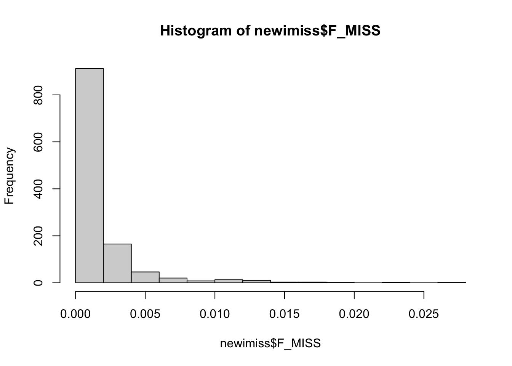

Last updated: 2020-11-17
Checks: 7 0
Knit directory: GWAS_QC/
This reproducible R Markdown analysis was created with workflowr (version 1.6.2). The Checks tab describes the reproducibility checks that were applied when the results were created. The Past versions tab lists the development history.
Great! Since the R Markdown file has been committed to the Git repository, you know the exact version of the code that produced these results.
Great job! The global environment was empty. Objects defined in the global environment can affect the analysis in your R Markdown file in unknown ways. For reproduciblity it’s best to always run the code in an empty environment.
The command set.seed(20200918) was run prior to running the code in the R Markdown file. Setting a seed ensures that any results that rely on randomness, e.g. subsampling or permutations, are reproducible.
Great job! Recording the operating system, R version, and package versions is critical for reproducibility.
Nice! There were no cached chunks for this analysis, so you can be confident that you successfully produced the results during this run.
Great job! Using relative paths to the files within your workflowr project makes it easier to run your code on other machines.
Great! You are using Git for version control. Tracking code development and connecting the code version to the results is critical for reproducibility.
The results in this page were generated with repository version 0cea7d6. See the Past versions tab to see a history of the changes made to the R Markdown and HTML files.
Note that you need to be careful to ensure that all relevant files for the analysis have been committed to Git prior to generating the results (you can use wflow_publish or wflow_git_commit). workflowr only checks the R Markdown file, but you know if there are other scripts or data files that it depends on. Below is the status of the Git repository when the results were generated:
Ignored files:
Ignored: .DS_Store
Ignored: .RData
Ignored: .Rhistory
Ignored: .Rproj.user/
Ignored: analysis/figure/
Ignored: data/.DS_Store
Untracked files:
Untracked: analysis/bootstrap.min.css
Untracked: data/hapmap3.bed
Untracked: data/hapmap3.bim
Untracked: data/hapmap3.fam
Untracked: data/hapmap3.map
Untracked: data/hapmap3.ped
Untracked: hapmap3.imiss
Untracked: hapmap3.lmiss
Untracked: hapmap3_01_2.bed
Untracked: hapmap3_01_2.bim
Untracked: hapmap3_01_2.fam
Untracked: hapmap3_01_3.imiss
Untracked: hapmap3_01_3.lmiss
Untracked: hapmap3_01_4.hwe
Untracked: hapmap3_01_5.bed
Untracked: hapmap3_01_5.bim
Untracked: hapmap3_01_5.fam
Untracked: hapmap3_01_6.hwe
Untracked: hapmap3_02_1_African.log
Untracked: hapmap3_02_1_African.prune.in
Untracked: hapmap3_02_1_African.prune.out
Untracked: hapmap3_02_1_ColoradoChinese.prune.in
Untracked: hapmap3_02_1_ColoradoChinese.prune.out
Untracked: hapmap3_02_1_EastAsia.prune.in
Untracked: hapmap3_02_1_EastAsia.prune.out
Untracked: hapmap3_02_1_Gujarati.prune.in
Untracked: hapmap3_02_1_Gujarati.prune.out
Untracked: hapmap3_02_1_Mexican.prune.in
Untracked: hapmap3_02_1_Mexican.prune.out
Untracked: hapmap3_02_1_Toscans.prune.in
Untracked: hapmap3_02_1_Toscans.prune.out
Untracked: hapmap3_02_1_Utah.prune.in
Untracked: hapmap3_02_1_Utah.prune.out
Untracked: hapmap3_02_2_African.genome
Untracked: hapmap3_02_2_African.log
Untracked: hapmap3_02_2_ColoradoChinese.genome
Untracked: hapmap3_02_2_EastAsia.genome
Untracked: hapmap3_02_2_Gujarati.genome
Untracked: hapmap3_02_2_Mexican.genome
Untracked: hapmap3_02_2_Toscans.genome
Untracked: hapmap3_02_2_Utah.genome
Untracked: hapmap3_allpop.genome
Untracked: hapmap3_allpop.log
Untracked: hapmap3_allpop.prune.in
Untracked: hapmap3_allpop.prune.out
Untracked: hapmap_African.bed
Untracked: hapmap_African.bim
Untracked: hapmap_African.fam
Untracked: hapmap_African.hh
Untracked: hapmap_African.log
Untracked: hapmap_African_populations.txt
Untracked: hapmap_ChineseColorado_populations.txt
Untracked: hapmap_ColoradoChinese.bed
Untracked: hapmap_ColoradoChinese.bim
Untracked: hapmap_ColoradoChinese.fam
Untracked: hapmap_EastAsia.bed
Untracked: hapmap_EastAsia.bim
Untracked: hapmap_EastAsia.fam
Untracked: hapmap_EastAsia_populations.txt
Untracked: hapmap_Gujarati.bed
Untracked: hapmap_Gujarati.bim
Untracked: hapmap_Gujarati.fam
Untracked: hapmap_Gujarati_populations.txt
Untracked: hapmap_Mexican.bed
Untracked: hapmap_Mexican.bim
Untracked: hapmap_Mexican.fam
Untracked: hapmap_Mexican_populations.txt
Untracked: hapmap_Toscans.bed
Untracked: hapmap_Toscans.bim
Untracked: hapmap_Toscans.fam
Untracked: hapmap_Toscans_populations.txt
Untracked: hapmap_Utah.bed
Untracked: hapmap_Utah.bim
Untracked: hapmap_Utah.fam
Untracked: hapmap_Utah_populations.txt
Untracked: plink
Untracked: relationships_w_pops_121708.txt
Note that any generated files, e.g. HTML, png, CSS, etc., are not included in this status report because it is ok for generated content to have uncommitted changes.
These are the previous versions of the repository in which changes were made to the R Markdown (analysis/01-MissingnessFiltering.Rmd) and HTML (docs/01-MissingnessFiltering.html) files. If you’ve configured a remote Git repository (see ?wflow_git_remote), click on the hyperlinks in the table below to view the files as they were in that past version.
| File | Version | Author | Date | Message |
|---|---|---|---|---|
| Rmd | 0cea7d6 | rheaprag | 2020-11-17 | Update and fix 01 |
| html | 1ce1285 | rheaprag | 2020-11-15 | Build site. |
| Rmd | fc27556 | rheaprag | 2020-11-15 | Fix formatting in files |
| html | f3159c1 | rheaprag | 2020-11-02 | Build site. |
| Rmd | 4ef3249 | rheaprag | 2020-11-02 | Add description to 01 |
| html | de1e8c3 | rheaprag | 2020-10-31 | Build site. |
| html | 75f2559 | rheaprag | 2020-10-31 | Build site. |
| Rmd | 2f21a86 | rheaprag | 2020-10-31 | Fix formating and attempt to adjust plot in 002 |
| html | 5e494ca | rheaprag | 2020-10-31 | Build site. |
| Rmd | f96e3d8 | rheaprag | 2020-10-31 | Add formatting to lists |
| html | 13f2bb0 | rheaprag | 2020-10-31 | Build site. |
| Rmd | a849c9a | rheaprag | 2020-10-31 | Add annotation to file |
| html | 046f47d | rheaprag | 2020-10-26 | Build site. |
| html | f8a7e7d | rheaprag | 2020-10-25 | Build site. |
| html | a4ee303 | rheaprag | 2020-10-25 | Build site. |
| Rmd | fbda257 | rheaprag | 2020-10-25 | Add notes to plots in Rmd file |
| html | d83d79d | rheaprag | 2020-10-25 | Build site. |
| html | 7ea97ee | rheaprag | 2020-10-25 | Build site. |
| Rmd | 4026027 | rheaprag | 2020-10-25 | wflow_publish(“analysis/01-MissingnessFiltering.Rmd”) |
| html | 965fd72 | rheaprag | 2020-10-18 | Build site. |
| Rmd | 81708d5 | rheaprag | 2020-10-18 | Fix formating in 01 |
| html | 5f9b28b | rheaprag | 2020-10-18 | Build site. |
| html | 06ca8d7 | rheaprag | 2020-10-18 | Build site. |
| Rmd | 1b2228e | rheaprag | 2020-10-18 | Fix formating in 01 |
| html | 33645b3 | rheaprag | 2020-10-18 | Build site. |
| html | f2acc09 | rheaprag | 2020-10-18 | Build site. |
| Rmd | 307ff7a | rheaprag | 2020-10-18 | Fix formating in 01 |
| html | 469ff54 | rheaprag | 2020-10-18 | Build site. |
| html | 969ca84 | rheaprag | 2020-10-18 | Build site. |
| Rmd | b696816 | rheaprag | 2020-10-18 | Update 00 and add 01 |
In order to remove SNPs that are not genotyped properly, several steps need to be taken.
--bed: specify the name/path of .bed file
--bfile: specify the name/path of bed/bim/fam files
--bim: specify the name/path of .bim file
--fam: specify the name/path of .fam file
--geno: filter out the variants with a threshold of 0.01 (filter SNPs with a call rate of <99%)
--hardy: writes a list of genotype counts and Hardy-Weinberg equilirbium test statistics to a .hwe file
--hwe: filter out variants with a threshold of 0.000001
--maf: filter out SNPs with a minor allele frequency <0.05
--make-bed: generate bed/bim/fam fileset
--missing: produces sample-based and variant-based missing data reports
--out: specify the name of the output files
The --missing flag will estimate the call rate of individual SNPs within the bfiles (bed/bim/fam) that were generated in the last step.
./plink --bfile hapmap3 --missing --out hapmap3hapmap3.hh
hapmap3.imiss
hapmap3.lmiss
hapmap3.log
The important files created are .lmiss and .imiss. These are text files that have the following columns:
CHR: Chromosome number
SNP: SNP identifier
N_MISS: Number of individuals in the data set missing the SNP
N_GENO: Number of non-obligatory missing genotypes
F_MISS: Proportion of the sample set missing for the SNP
./plink --bfile hapmap3 --geno 0.01 --maf 0.05 --make-bed --out hapmap3_01_2hapmap3_01_2.bed
hapmap3_01_2.bim
hapmap3_01_2.fam
hapmap3_01_2.hh
A new threshold is generated with the --geno and --maf plink flags. --geno 0.01 filters out SNPs with missing call rates exceeding value of 0.01. maf 0.05 filters out SNPs with a minor allele frequency below 0.05. New bflies (bed/bim/fam) with a new threshold are created with the --make-bed.
./plink --bfile hapmap3_01_2 --geno 0.01 --maf 0.05 --missing --out hapmap3_01_3hapmap3_01_3.hh
hapmap3_01_3.imiss
hapmap3_01_3.lmiss
hapmap3_01_3.log
Similarly to step 1, the .imiss and .lmiss files are created with a new threshold.
newlmiss <- read.table("hapmap3_3.lmiss", header = T)
hist(newlmiss$F_MISS)
newimiss <- read.table("hapmap3_3.imiss", header = T)
hist(newimiss$F_MISS)
| Version | Author | Date |
|---|---|---|
| 7ea97ee | rheaprag | 2020-10-25 |
./plink --bfile hapmap3_01_2 --hardy --out hapmap3_01_4hapmap3_01_4.hh
hapmap3_01_4.hwe
hapmap3_01_4.log
The .hwe file is a text file with the following columns:
CHR: Chromosome number
SNP: SNP identifier
TEST: Indication of what type of test being done, in this case ‘ALL’
A1: Allele 1 (minor allele)
A2: Allele 2 (major allele)
GENO: Separation of genotype counts (AT hom/het/A2 hom)
O(HET): Observed heterozygote frequency
Plotting the distribution:
hwe <- read.table("hapmap3_01_4.hwe", header = T)
hist(hwe$P)./plink --bfile hapmap3_01_2 --hwe 0.000001 --make-bed --out hapmap3_01_5hapmap3_01_5.bed
hapmap3_01_5.bim
hapmap3_01_5.fam
hapmap3_01_5.hh
hapmap3_01_5.log
The hwe 0.000001 flag filters out all SNPs with a p-value below 0.000001.
./plink --bfile hapmap3_01_5 --hardy --out hapmap3_01_6This creates the following files:
hapmap3_01_6.hh
hapmap3_01_6.hwe
hapmap3_01_6.log
Plot the new distribution:
newhwe <- read.table("hapmap3_01_6.hwe", header = T)
hist(newhwe$P)
sessionInfo()R version 4.0.2 (2020-06-22)
Platform: x86_64-apple-darwin17.0 (64-bit)
Running under: macOS Catalina 10.15.7
Matrix products: default
BLAS: /Library/Frameworks/R.framework/Versions/4.0/Resources/lib/libRblas.dylib
LAPACK: /Library/Frameworks/R.framework/Versions/4.0/Resources/lib/libRlapack.dylib
locale:
[1] en_US.UTF-8/en_US.UTF-8/en_US.UTF-8/C/en_US.UTF-8/en_US.UTF-8
attached base packages:
[1] stats graphics grDevices utils datasets methods base
other attached packages:
[1] workflowr_1.6.2
loaded via a namespace (and not attached):
[1] Rcpp_1.0.5 rstudioapi_0.11 whisker_0.4 knitr_1.29
[5] magrittr_1.5 R6_2.4.1 rlang_0.4.7 stringr_1.4.0
[9] tools_4.0.2 xfun_0.16 git2r_0.27.1 htmltools_0.5.0
[13] ellipsis_0.3.1 rprojroot_1.3-2 yaml_2.2.1 digest_0.6.25
[17] tibble_3.0.4 lifecycle_0.2.0 crayon_1.3.4 later_1.1.0.1
[21] vctrs_0.3.4 promises_1.1.1 fs_1.5.0 glue_1.4.1
[25] evaluate_0.14 rmarkdown_2.3 stringi_1.4.6 compiler_4.0.2
[29] pillar_1.4.6 backports_1.1.8 httpuv_1.5.4 pkgconfig_2.0.3